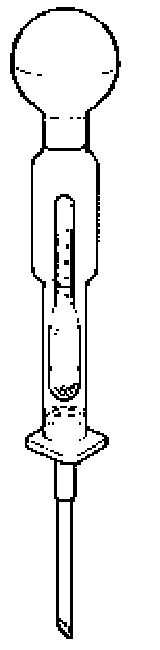
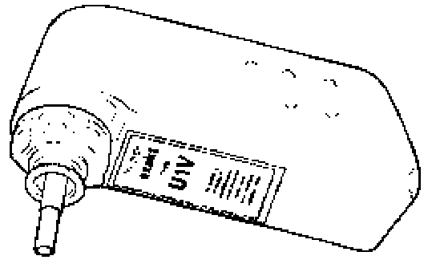

Electrolyte Level, Checking
Electrolyte level, checking
Special tools and equipment
- Commercially available hydrometer
- Battery filling bottle VAS 5045 or equivalent
A correct electrolyte level in the battery is an important factor in ensuring a long battery service life.
An insufficient electrolyte level allows the battery plates to dry which results in a loss of capacity (reduced output) of the battery. If the cell plates are not covered by electrolyte, the plates, the plate bridges and the cell connections will corrode. This corrosion ensures the battery function can no longer be guaranteed. The battery is unusable.
If the electrolyte level is too high, damage will be caused outside the battery by the leaking battery acid (sulfuric acid/water mixture) e.g. components in engine compartment.
A visual check of the battery acid level is all that is required on batteries with a recognizable minimum and maximum marking.
- Switch ignition off.
- Check acid level visually.
The acid level is OK when the fluid level is between the minimum and maximum marking.
If no minimum and maximum markings are visible on the battery housing, the sealing plugs must be removed. It is then possible to view the electrolyte level by viewing the inside of the battery cells.
- Check acid level visually.
The electrolyte level is OK when the fluid level is the same height as the visible plastic peg.
The plastic peg equates to the max. marking for the electrolyte level.
If the electrolyte level is not OK, correct level as follows:
- Remove battery sealing plug.

- Use hydrometer to extract excessive electrolyte until fluid level is same as inner plastic peg level marking if the electrolyte level is too high.
- If electrolyte level is too low, fill up to max. marking with distilled water using battery filling bottle VAS 5045 or equivalent.
CAUTION!
DO NOT overfill. Overfilled batteries can boil over. Too little electrolyte reduces the service life of the battery.
Notes:

- The construction of the filler support on filling bottle VAS 5045 prevents an overfilling of the battery cells and therefore stops electrolyte from leaking out When the max. level is reached, the flow of distilled water into the battery cells is interrupted.
- Use distilled water only. This prevents contamination of the battery electrolyte and the associated increased self discharge.
- Reinstall battery cells sealing plug again if necessary.
It is absolutely necessary to use original sealing plugs in the battery screwed openings to guarantee the battery is sealed correctly.
Use onginal sealing plugs of same construction if lost or damaged.
The sealing plugs must be installed with an 0-ring.